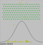

|  |
The Normal DistributionAn Illustration of Basic Probability |
|---|
The exhibit below illustrates a more simple process that gives rise to the familiar "bell curve" of the normal distribution. In this case balls are dropped from the top and pass through a series of pins until they hit the bottom. Once at the bottom, they stack up to record the number that have hit that point. At first there does not seem to be any pattern but after a few minutes the stacks conform to the superimposed curve.
This Applet may be imbedded within your own web page with the following HTML:
<applet code="BallDrop.class" width=300 height=300> <PARAM NAME="BallImage" VALUE="smallball.gif"> <PARAM NAME="PinImage" VALUE="smallpin.gif"> <PARAM NAME="NumRows" VALUE="8"> <PARAM NAME="NumColumns" VALUE="20"> <PARAM NAME="NumBalls" VALUE="5"> <PARAM NAME="Delay" VALUE="10"> <PARAM NAME="TopSpace" VALUE="30"> <PARAM NAME="SideSpace" VALUE="20"> </APPLET>
The source code for this applet may be found
here.